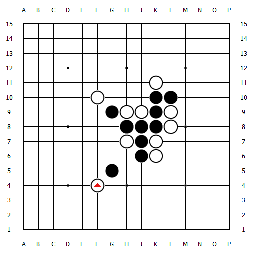

五子棋做vcf 献给初学者
首页
茗弈阁
#1 五子棋做vcf 献给初学者 作者：茗弈宽容 发表时间：2010-1-20 16:43:07

记忆中的老题目了。再发一次。献给爱好五子棋的朋友。
黑棋先行。盘面黑棋有三个冲和一个活二。要求
1。利用一颗棋子做出一套vcf（此后白棋如果放弃一步，黑棋即可连续冲四取胜）。
2。做vcf的时候，必须利用到盘面上的两个冲和一个二
（转自咒灵博客）
#2 Re:五子棋做vcf 献给初学者 作者：wd1988 发表时间：2010-1-20 17:05:18
E5做杀连攻胜
=======上图对应的爱五子棋谱代码如下，以便你拆解：========
h8h9i8i9j8k8j9k9k10h7i7j6i6j7g9f10j10j11g5f4e5a15i5i4f5h5c5d5f8g8e7d6h10i11i10
======================================================［此帖子已被 wd1988 在 2010-1-20 17:07:34 编辑过］